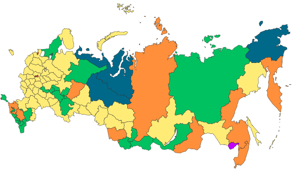
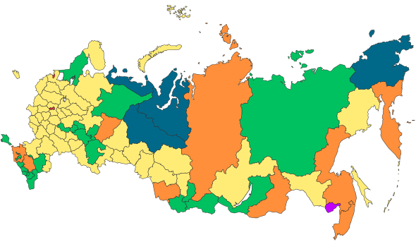

Russia
O gigante do mundo
Oficialmente Federação Russa, é um país localizado no norte da Eurásia.
Com 17 075 400 quilômetros quadrados, a Rússia é o país com maior área
do planeta, cobrindo mais de um nono da área terrestre. É também o nono
país mais populoso, com 142 milhões de habitantes. Faz fronteira com 14
países e ainda pela fronteira marítima com o Japão, pelo Mar de Okhotsk,e
com os Estados Unidos, por meio do Estreito de Bering. Existem cerca de
160 grupos étnicos na Rússia, que falam cerca de cem idiomas. Porém, o
russo é a língua oficial.
Pontos Turisticos